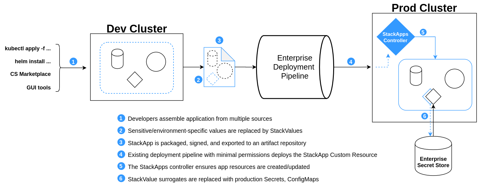

Stackapps Guide
StackApps
Critical Stack Applications- StackApps represent the premier, officially
supported mechanism for deploying a Kubernetes application into a Critical Stack
cluster. The StackApp is intended to be the main representation of
a deployment/release of an application, at a particular version, running in the
cluster. StackApps are built of kubernetes native resources and kubernetes
custom defined resources. They can be interacted with via the Critical Stack UI
or the Kubectl command line tool.
StackApps provide the user with a means of representing an entire running
application with a single cryptographically signed artifact. This provides a
developer friendly means for an application to be moved between environments
in a repeatable, verifiable, and auditable fashion.
Once the StackApp has been deployed all interaction with the application is
handled via the StackApp, resource ownership insures the state of the
application matches the state defined in the StackApp at all times. Any change
to the application is achieved by building and modifying the application in a
development environment and packaging a new revision. When this new revision
is deployed in a QA or Production environment the underlying application is
updated to match the state defined in the new revision. This can be accomplished
via standard Kubernetes rolling update or our stand alone Canary deployment
StackRelease.
Packaging
StackApps are build from applications running inside a cluster. Currently the
premier packaging mechanism is built into the Critical Stack UI; however there
is a cli on the roadmap and a StackApp can be built and signed manually
via yaml StackApp manifest and the exporting of included resource manifests
with kubectl.
Quick Start
Getting it running.
While the StackApps controllers can be run on their own, the Critical Stack UI
has been designed with them in mind. In addition the Critical Stack UI is
currently the primary way to package a running application into a StackApp.
If you would like to add the UI to your cluster please follow the steps in the UI repository here.
In the case of a local cluster or remote development cluster, the Critical
Stack UI and StackApps controllers can be used together. For a production
cluster in which applications will be deployed via StackApps the Critical
Stack UI is not necessary.
To Install the StackApps Controller please follow the
Installation page.
For information on creating, packaging, and signing a StackApp from a running
application see the docs here
Deploying an application to a new cluster with StackApps.
Once you have a packaged and exported StackApp you'll need to set up a few things as an
administrator in the cluster in which you wish to deploy the StackApp.
- Ensure the
StackAppscontrollers and resource definitions are on the target cluster. The Controllers should be running in thecritical-stacknamespace. - Apply your
StackAppsConfigfor the application. Details can be found here. - Export the
VerificationKeyfrom the key pair that was used to sign theStackAppfrom the cluster in which it was created. Apply it to the target cluster in the namespace specified in theStackAppsConfigasappnamespace. - Apply the
StackApp. TheStackAppis a cluster scoped resource, you will not need to specify a namespace. Once theStackApphas been applied allow time for all of the resources to become healthy and check out your application running in its new home!
StackApps Guide
A StackApp is a resource in the Critical Stack cluster which repesents
a kubernetes application at a particular version.
The StackApp contains:
- Metadata about the application
- A reference to the manifests used to deploy all associated resources
- Signature details for the manifests
The Critical Stack cluster contains infrastructure that is aware of StackApps.
When the StackApp resource is created or modified, the underlying
application resources are updated accordingly (assuming that the cluster's
configured deployment guarantees are met which may include signing,
compatibility checks, etc).
A StackApp may be created from raw kubernetes manifests that already exist
(or that are generated from existing source material), or it may be created by
encoding selected objects running within a kubernetes cluster namespace (see
packaging). The former method (existing
manifests) is intended to serve as a bridge for developers with existing
kubernetes applications, or those who would like to create their applications
using third-party tools. The latter (running resources) is tailored toward
developers creating their applications within the Critical Stack "ecosystem"
to begin with - e.g. with the aid of CS UI and accompanying tools. The
Critical Stack API and UI would provide functionality for selecting running resources
for packaging and export into a StackApp.
Once a StackApp has been deployed (or created from components running in the
cluster), the CS UI can provide aggregated status information (health checks,
metrics data, etc) for StackApps in each namespace. Because this system is
fully integrated with the kubernetes API, this information is easily available
to other tools such as kubectl without the need for the CS UI to act as an
intermediary.
Resources that belong to a StackApp are protected (using kubernetes RBAC
permissions) by default. Similarly, all manifests currently or previously
referenced by a StackApp are immutable.

Glossary
See below for brief descriptions of key terms. Definitions are further expanded by the behavior outlined below.
- Application: for the purposes of this design, an application refers to a "business application", i.e. the primary workload of a Critical Stack cluster. It may or may not be completely self-contained, and it is likely comprised of several logical components.
- StackApp: a "Critical Stack Application" (StackApp) encapsulates an application logically. It is responsible for grouping together kubernetes resources and managing their lifecycle - creation, upgrade, rollback, deletion.
- StackValue: the representation of a secret or an environment specific configuration item within the StackApp
- Manifests: actual kubernetes-native encoding of application resources. In most cases the manifests would be generated from running resources in a cluster environment, though the initial manifests may come from an existing build artifact.
- Signer: a signer is an identity that attests to the validity of manifests. The core purpose of signing is to designate readiness for deployment, though a developer or cluster administrator may wish to further differentiate intents; manifests may be signed multiple times and each may indicate something different (i.e. signatures by a developer, a QA tester, a security review, and so on).
StackApps Custom Resources
Resources in the StackApps family are built into the API Group features.criticalstack.com.
- StackAppsConfig Cluster Scoped: The StackAppsConfig should be accessible only by a cluster administrator to maintain separation of dutes and ensure the basic configuration goes through an additional verification layer. The StackAppsConfig containts information used buy all of the controllers in the StackApps family.
- StackApp Cluster Scoped: The stackApp is the owner of all things StackApps related. It contains information necessary build the application as well as related metadata necessary for verification before installation. Any interaction with an application with the exception of administrator configuration should happen at this level
- StackRelease Namespaced: The StackRelease contains information pertaining to the current state of the application deployment, changes here precipitate any routing change or change to an underlying application. Only the StackApp controller should be allowed to create or modify a StackRelease; however StackReleases contain valuable status and troubleshooting information and should be use accordingly.
- AppRevision Namespaced: The AppRevision contains the base information needed to install and manage the application. Much like the StackRelease it should only be created or updated but one of the StackApps controllers, Although it does contain valuable status information that should be used for monitoring and troubleshooting.
- VerificationKey Cluster Scoped?: The VerificationKey is simply a crd designed to allow Rbac management of the public side of the RSA signing key
Cluster Requirements
Installation
Clone the repository and build the dependencies
git clone https://github.com/criticalstack/stackapps.git
cd stackapps
helm dependency update ./chart
Leverage the included helm chart for installation
helm install stackapps ./chart
Developers can utilize tilt (ensure you have tilt and go installed on your system)
tilt up
Configuration
Configuration of StackApps is handled through a cluster scoped custom resource of KIND StackAppConfig in the API-GROUP features.criticalstack.com and is application specific.
the Spec of the StackAppConfig contains basic configuration for the application and more specific configuration for each StackApps controller.
apiVersion: features.criticalstack.com/v1alpha1
kind: StackAppConfig
metadata:
generation: 1
name: stackapp-config
spec:
environmentname: dev
appnamespace: prod-app
stackapps: #StackApps specific configuration
stackvalues: #StackValues Specific Configuration
releases: #StackRelease Specific Configuration
StackApps Specific Configuration
stackapps:
enabled: false
This is a switch to disable the StackApps Controllers and currently is not used
StackValues Specific Configuration
stackvalues:
enabled: false
insecure: false
tokenName: vault-token
sources: #array of source configurations
enabled: Currently not implemented.
insecure: uses the hardcoded values provided in annotation form to populate the k8s resources. This is only for testing with non-secure text in a development invironment.
tokenName: the name of the k8s secret that contains the tokens to authenticate to platforms in which secrets and configuration items will be stored.
sources: Array of source configurations. Currently supported source types include artifactory, aws_s3, and vault.
StackValue Sources
vault:
name: myvault
region: west
type: vault
route: "http://vault.external.svc:8200"
name: alais to be used for the source
'region: Aws hosting region, only used if source is equal to aws_s3`
type: type of source
route: url in which source is hosted
StackRelease Configuration
enabled: true
backendType: traefik
ingressPort: 30080
host: myapp.com
releaseStages:
- canaryWeight: 20
stepDuration: "1m"
- canaryWeight: 50
stepDuration: "1m"
- canaryWeight: 100
enabled: Currently not implemented.
backendType: Specifies infrastructrue to use for deployends. Currently traefik is the only supported value. if this field does not exist StackRelease will not be used.
ingressPort: Port in which the application will be exposed.
host: Hostname of the application.
releaseStages: Array of stages the canary controller will step though. canaryWeight is represented in percent and `stepDuration is represented as a time i.e. "60s" is equal to "1m".
this full example yaml file can be found this link that i might put here at some point
StackApps
The StackApp is the Highest order resource in the StackApps ecosystem, and the only resource a developer (or ci pipeline) needs to interact with. StackApps are immutable and changes should be represented in new revisions.
When a StackApp is bundled it contains two major components. The meat of the StackApp is in the nested AppRevision, the other main component that is a configmap containing a grouping of all of the manifests that make up the application in the form of a configmap. There are additional elements that will be populated on deployment by the StackApps controller.
The manifests are signed on StackApp creation and result is stored in the AppRevision. StackApps are cluster scoped resources, for additional information on AppRevisions see the AppRevision Documentation.
See the details on the StackApp resource here
StackValues
StackValues are custom resources that replace sensitive data or information
that will be specific to an environment. This includes all Kubernetes Secrets
and some ConfigMaps. When a StackApp is applied that contains one or more
StackValue, the StackValue controller uses the contained metadata as well
as information from the StackAppConfig to fetch the value and build the
corresponding Kubernetes resource. Currently StackValues can retrieve data
from Artifactory, Hashicorp Vault, and Amazon S3.
If a StackApp is packaged using the Critical Stack UI Secrets will
automatically be replaced and ConfigMaps will be included or replaced
based on annotations. If these annotations do not exist the user will
be prompted to add them. During the packaging of a StackApp all
necessary metadata is gathered from annotations on the resource
see annotations here.
These annotations on Secrets and any Configmap that will
be replaced by a StackValue are necessary before any StackApp
can be packaged.
See the details on the StackValues resource here
StackRelease
The StackRelease is a Namespace scoped custom resource that contains information about the deployment details for an application. If the StackRelease feature is not used the StackRelease is largely a pass through step on and only serves to deploy the AppRevision into its namespace. If the StackRelease feature is toggled on the StackRelease controller will deploy the application into a newly built namespace that is named with the revision and then build the resources necessary to preform a canary deployment and slowly shift traffic into the new namespace from the stable version. The mechanism for this is defined in the StackReleaseConfig( ### link doc), Currently Treafik is the only supported mechanism however service mesh integration is on the roadmap.
The StackRelease will be deployed and managed by the StackApp
controller; however relevant diagnostic and monitoring information can
be had with introspection. kubectl describe stackRelease <myStackRelease>
apiVersion: features.criticalstack.com/v1alpha1
kind: StackRelease
metadata:
name: demoapp-v1
spec:
appname: demoapp-v1
apprevision: # nested AppRevision, see AppRevision docs.
releaseconfig: # nested config for StackRelease. See StackAppConfig docs.
see additional details about the StackRelease here
AppRevision
The AppRevision contains the base information needed to install and manage the application. Much like the StackRelease it should only be created or updated but one of the StackApps controllers, Although it does contain valuable status information that should be used for monitoring and troubleshooting.
see the details on the AppRevision resource here
Custom Resources
StackApp
apiVersion: features.criticalstack.com/v1alpha1
kind: StackApp
metadata:
generation: 1
name: demoapp-v1
spec:
appRevision: # nested appRevision See appRevision docs.
majorVersion: 1
StackApp Spec
appRevision: contains details about the application being deployed, see
AppRevision Docs.
majorVersion: Major version of the application. This is Necessary because Major
Version is using in naming to insure multiple major versions can be run
independently
StackApp ConfigMap
apiVersion: v1
data:
manifests: | # note pipe to allow multiline string
kind: ConfigMap
metadata:
labels:
stackapps.criticalstack.com/export: ignore
name: demoapp-v1-r1
manifests: list of yaml kubernetes resources separated by the standard ---.
StackRelease
The StackRelease resource is built and managed by the StackApps controller.
It is namespaced and contains the AppRevision that its controller will
deploy and the relevant configuration taken from the StackAppConfig.
apiVersion: features.criticalstack.com/v1alpha1
kind: StackRelease
metadata:
name: demoapp-v1
spec:
appname: demoapp-v1
apprevision: # nested AppRevision, see AppRevision docs.
releaseconfig: # nested config for StackRelease. See StackAppConfig docs.
StackValue
StackValue Annotations
stackvalues.criticalstack.com/stackValue: if true, build StackValue from
ConfigMap and omit it from the stackapp.
stackvalues.criticalstack.com/sourceType: Type of source value will be retrieved
from. Should be one of the supported types (Artifactory, Vault, or AWS_S3).
stackvalues.criticalstack.com/path: Endpoint required to retrieve value. The
base URL is defined in the StackAppsConfig.
stackvalues.criticalstack.com/insecureval: non-Secure value to be used if the
StackApp is deployed to a development Cluster.
Example Secret prepared for StackValues
apiVersion: v1
kind: Secret
metadata:
name: demoapp-db-credentials
annotations:
stackvalues.criticalstack.com/path: "v1/secret/data/myapp/password"
stackvalues.criticalstack.com/sourceType: "vault"
stackvalues.criticalstack.com/insecureval: "password"
data:
value: MWYyZDFlMmU2N2Rm
Resulting StackValue that will be included in the StackApp
kind: StackValue
metadata:
name: demoapp-db-credentials
spec:
insecureVal: password
name: demoapp-db-credentials
objectType: Secret
path: v1/secret/data/myapp/password
sourceType: vault
When this StackValue is applied to the cluster the StackValue controller will
reconcile it into a kubernetes Secret. The Value will be retrieved by
an api call to Vault at the URL provided for Vault in the StackAppsConfig
at the api endpoint defined in path: above.
Note that this is handled this way because the CI pipeline or developer
that apply the StackApp should not have the ability to define an external
location for making API calls. Access to the StackAppsConfig should be
limited to administrators via RBAC.
AppRevision
apiVersion: features.criticalstack.com/v1alpha1
kind: AppRevision
metadata:
name: demoapp-v1
spec:
appRevisionConfig: #nested from StackAppConfig
manifests: demoapp-v1-r1
revision: 1
signatures: #RSA signature(s)
Getting Started
Install
Using Helm:
$ helm dependency update .
$ helm install stackapps ./chart
Stay tuned for more getting started documentation.
FAQ
Ask some questions, maybe they'll end up here!